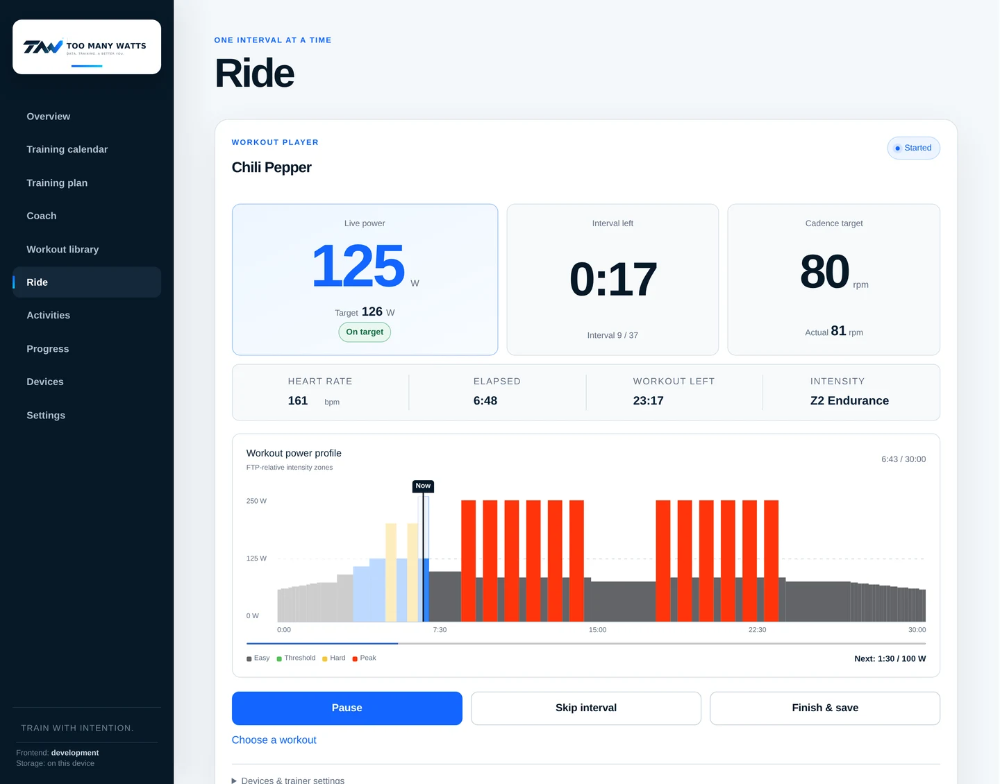
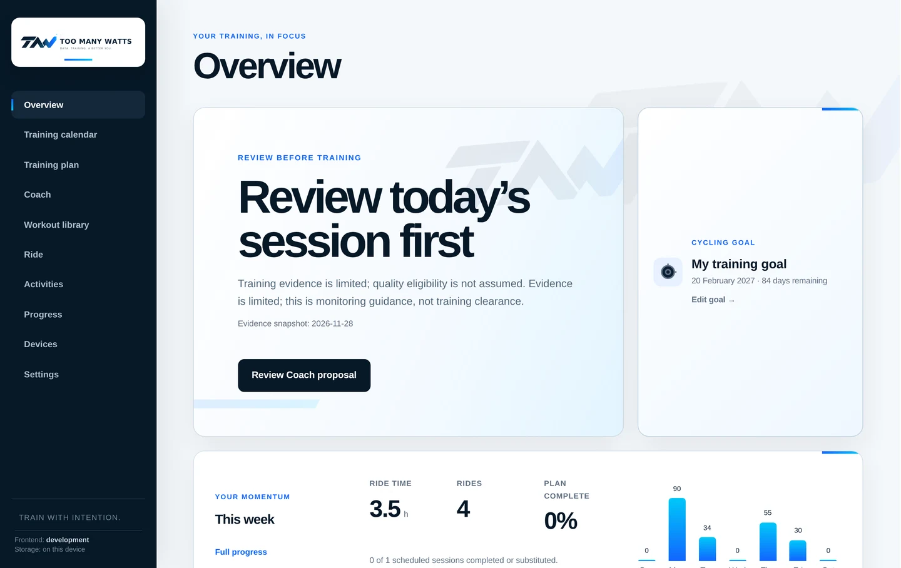
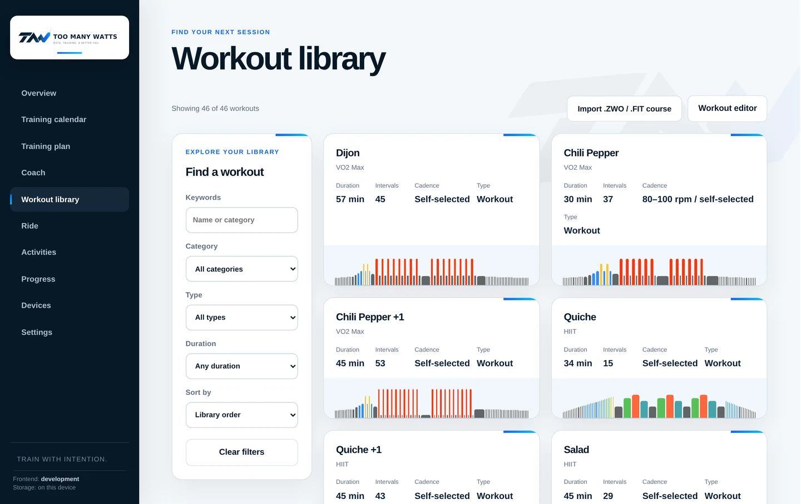
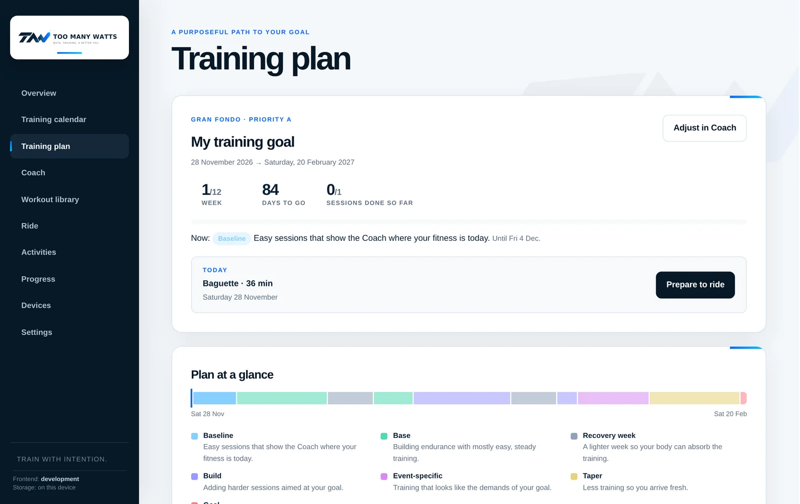
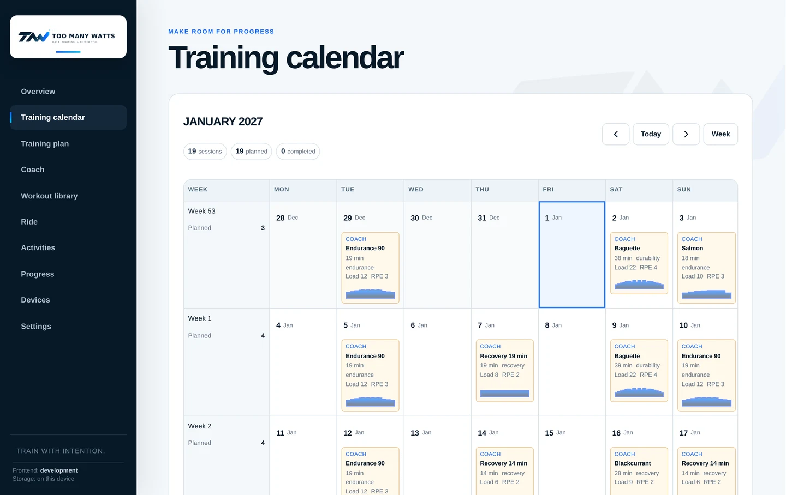
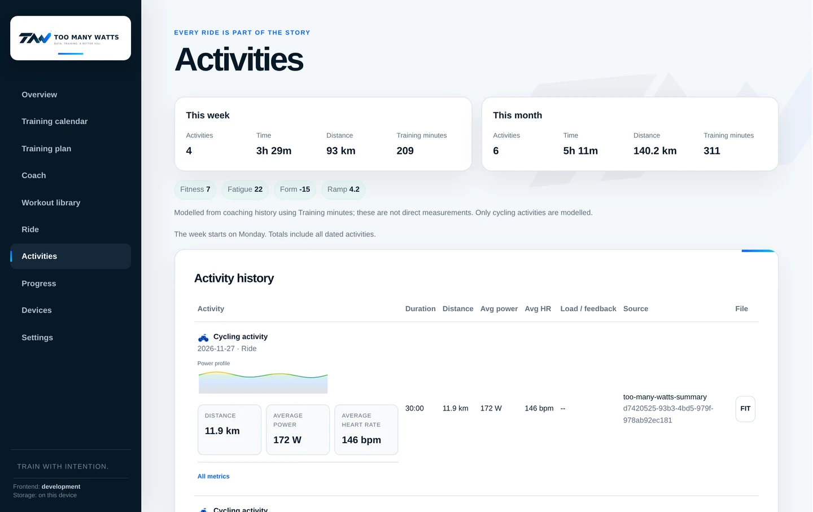
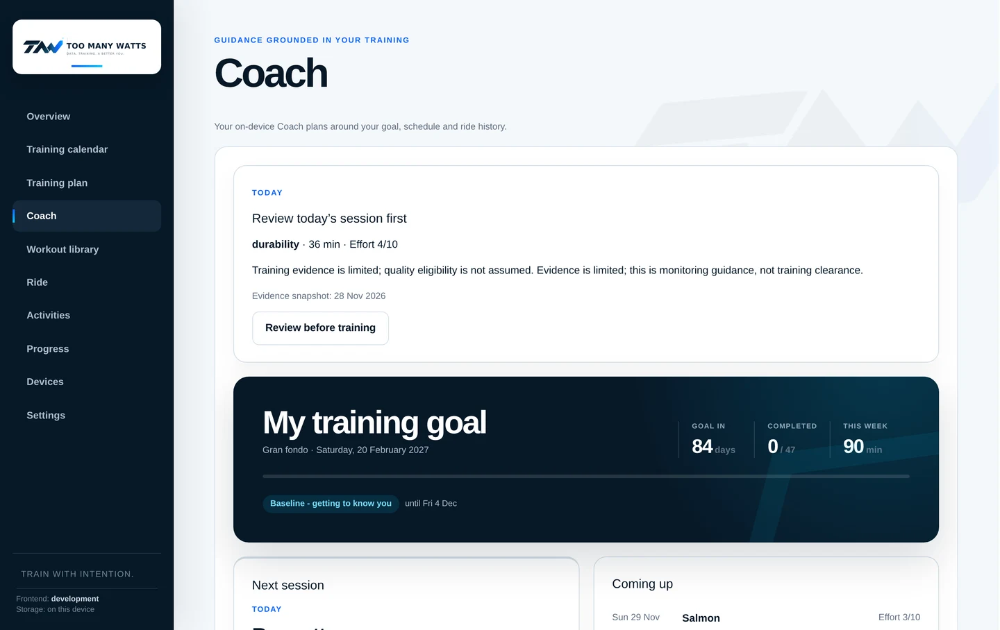
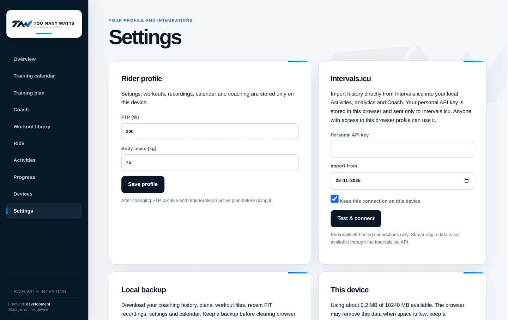
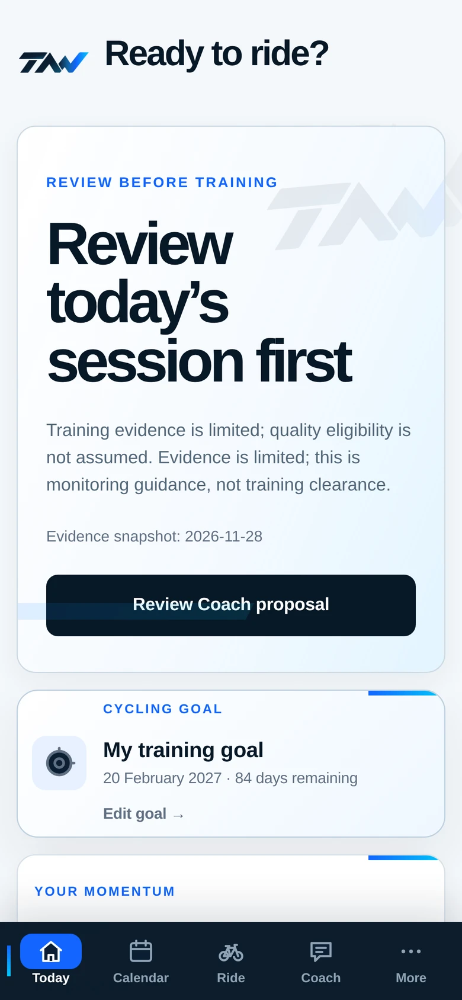
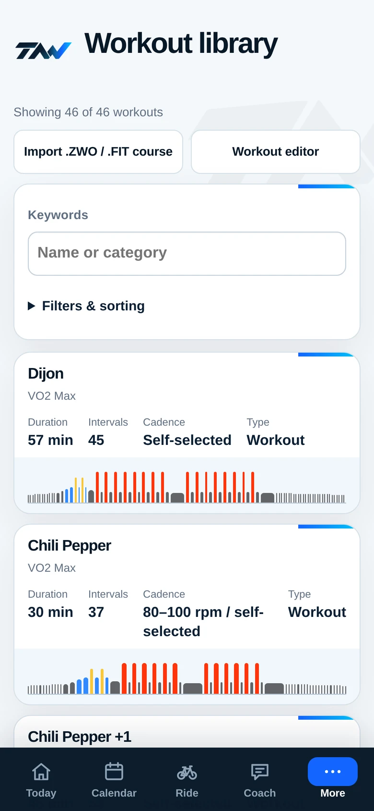

Turn a browser tab into an indoor cycling cockpit. Too Many Watts runs structured workouts, drives a smart trainer, records every ride and plans the weeks ahead — with no account, no cloud and no server sitting between you and your trainer.

A few words you will see on screen:
| Word | Meaning |
|---|---|
| FTP | Functional threshold power: the reference, in watts, that workout targets are a fraction of. |
| Target | The effort the workout asks for. -- in an actual reading means unavailable, not zero. |
| ERG | Trainer mode that holds a requested power by adjusting resistance. |
| ZWO / FIT | A text workout file / a compact activity recording you can download or upload. |
| RPE | Your own effort rating on a 0–10 scale, used as session feedback. |
The effort is the whole interface. Target power, actual power and the gap between them are the biggest things on screen, next to the interval countdown and the cadence the workout asks for. A marker walks along the session profile so you always know what is left and what is next.
Structured sessions, not just a stopwatch. 46 built-in workouts cover recovery, tempo,
sweet spot, threshold, VO2 max, sprints and race prep, each with power and cadence targets.
Import .zwo files, load .FIT courses, or build your own session in the workout editor.
A Coach that works around your week. Give it a goal, a date and the days you can train. It lays out the phases, picks the sessions and explains why — then adapts when life, illness or a missed ride gets in the way. It is deterministic, rule-based guidance: not a chatbot, and not medical advice.
Every ride is kept. Finished sessions become FIT files on your device, alongside weekly and monthly totals, fitness/fatigue/form and observed power profiles. Upload to Intervals.icu when you want a second opinion.
Built to be used mid-effort. Phone and desktop layouts switch automatically, controls stay reachable, an interrupted ride is recovered, and the app installs to your home screen and reopens from its cache when you are offline.


Each card carries the category, duration, interval count, cadence prescription and a power profile drawn from the session's own targets.





The same app switches to a touch layout below 700 px: a five-item bottom bar, compact cards and ride metrics that stay on screen. Open the HTTPS address in Chrome on Android and choose Install app (or Add to Home screen) to run it like a native app.
 |
 |
The Coach is a local rules engine, so you can always ask what it is thinking:
There is no Too Many Watts login, no account server and no analytics pipeline. Workouts, recordings, plans and settings live in this browser's storage on this device.
https://intervals.icu; anyone with access to this browser profile can use it.
Disconnecting keeps imported history. See the Intervals.icu guide.--, never
as zero, and incomplete totals are labelled as known values.Too Many Watts speaks the protocols indoor bikes and sensors already use:
You choose every device from the browser's own pairing prompt; a website cannot connect to your sensors without permission. Trainer modes are ERG, resistance and slope simulation.
Supported browsers: Chrome, Edge, Opera, Brave and Samsung Internet over HTTPS (or
localhost during development). Firefox and Safari do not provide the Web Bluetooth path a
trainer needs, and the web version is not supported on iOS. On Linux you may need to enable
chrome://flags/#enable-experimental-web-platform-features (or the Edge/Opera equivalent).
Host it once and riders only need the address: there is no backend, database or authentication to operate. Node.js 22.18.0 or newer with npm is enough to develop locally.
npm install
npm start # development server with live reload
npm run build # browser-ready files in dist/
npm test # automated checks
Serve dist/ over HTTPS (or localhost) — Web Bluetooth requires a secure context. For an
encrypted development server, npm run starttls expects local certificates at
dev_cert/cert.pem and dev_cert/key.pem. Storage, hosting and migration details are in
browser-only deployment; focused test commands are in the
code guide.
The desktop app shows the frontend build label at the bottom of the sidebar; published images display the GitHub Actions build number and attempt, with the full revision on hover.
docker compose up -d # published frontend on http://localhost:8080
docker compose down
Build from your checkout instead of the published image:
docker compose -f compose.yaml -f compose.server.yaml up --build -d
Public HTTPS hosting with automatic certificates — replace app.example.com in the
Caddyfile with a hostname you control:
docker compose -f compose.https.yaml up -d
The frontend container runs unprivileged on port 8080 with a read-only filesystem, no Linux
capabilities and a health check; Caddy handles TLS and HSTS. For the existing Dockhand
bike_trainer stack, use compose.dockhand.yaml, which keeps host
port 1111 for your existing proxy. Images are published to
ghcr.io/tomvlf/too-many-watts with build provenance and a software bill of materials.
To deploy exactly one reviewed build, pin its digest:
docker buildx imagetools inspect ghcr.io/tomvlf/too-many-watts:latest
# image: ghcr.io/tomvlf/too-many-watts@sha256:<digest>
With cosign installed, verify the signature before pulling:
cosign verify ghcr.io/tomvlf/too-many-watts:latest \
--certificate-identity-regexp 'https://github.com/tomvlf/Too Many Watts/.github/workflows/publish-image.yml@refs/(heads/master|tags/v.*)' \
--certificate-oidc-issuer https://token.actions.githubusercontent.com
The build derives a Content Security Policy from the exact HTML it ships, so scripts are limited to hashed inline blocks and this origin plus Intervals.icu. Rebuild the policy with the app; do not loosen it to silence a browser warning. Other static hosts must configure equivalent headers themselves, and offline loading is best-effort rather than a backup.
| I want to... | Read |
|---|---|
| Understand the code without a programming background | Beginner's code guide |
| Know where data lives, back it up, or host it | Deployment, storage and migration |
| Connect Intervals.icu | Intervals.icu guide |
| Understand planning, feedback and its limits | Coach guide |
Too Many Watts grew out of Auuki by Dimitar Marinov, and continues here with a rebuilt interface and an adaptive Coach.
Licensed under the GNU AGPL v3.